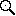

Guider control
Preliminaries
Before attempting to guide, please do the following:
- Make sure a Save To directory is set in Preferences (in the Exposures panel). This is necessary for guide images to be downloaded and displayed.
- Buy a 3-button mouse (if you don't already have one). They are cheap and useful. The guide window makes heavy use of the middle and right buttons.
Download
New guide images are automtically downloaded whenever the guide window is open. If the Current/Hold button says Current then these newly downloaded files are automatically displayed.
Only the most recent 100 images are saved, and those are deleted when you quit STUI. However, guide images may be left on your disk if STUI is killed or quits unexpectedly. Please check your Save To directory once in awhile to make sure guide images are not accumulating.
The Guide Window
This section describes the elements of the guide window.
Top Row: Guiding Status
Basic guide loop and guide camera exposure status.
Row 2: History Controls
Allows you to select an image from the image history or from disk.
- Left and Right Arrows allow you to see previous images.
- Note: if the next or previous image is out of sequence then the appropriate arrow will be hollow. This will happen if you use the Choose... button to view an image that is not in the history. It will also happen if the history is trimmed while you are viewing an image very near the beginning of the history.
- Current/Hold toggle button allows you to hold the current image or automatically display new images as they come in.
- Warning: most guide controls are disabled unless you are in Current mode!
- Hold is set automatically if you use the history arrows or Choose... button. This is so a new guide image won't overwrite your display.
- When you are done looking at old images, toggle it back to Current. This will update your display to the current image and keep it updated, and will re-enable the guide controls.
- Name field shows the name of the displayed image. You may copy this text but not change it.
- Choose... button allows you to view any FITS file.
- If you select one that is already in the history, you jump there. Otherwise you create a new history entry and the image will be shown as out of sequence (as indicated by hollow left and right arrows).
Row 3: Image Controls
Controls image appearance: intensity scaling, zoom, etc.
- Scaling Function menu sets the image scaling function. Your choices range from Linear to very nonlinear.
- Data Range menu adjusts the range of intensities displayed. 99% means that the central 99% of scaled intensity values are shown in the available shades of gray. All dimmer value are black and all brighter values are white. You can fine-tune the data range by varying the black and white levels.
 Select Mode (the default mode):
Select Mode (the default mode):
- See pixel values by rolling over the image.
- Eventually it may be possible to select stars or guide probes to see more information about specific stars.
- Typically you leave the "plus" icon selected and temporarily choose the next two modes by clicking the middle or right mouse button. But you may permanently change modes by clicking an icon.
- Contrast Mode (the middle mouse button temporarily selects this mode). This is a fine adjustment beyond that provided by the data range menu.
- Click or click and drag to adjust the black and white levels. The left/right position of the mouse controls the black level and the up/down position controls the white level.
- Double-click to restore the default levels.
-  Zoom Mode (the right mouse button temporarily selects this mode):
- Click and drag to zoom. Drag from the upper left to the lower right to zoom in on the region you select. Drag in the opposite direction to zoom out (more for a smaller box).
- Double-click to "zoom to fit", so that the entire image is visible.
- Zoom factor shows the current zoom factor. You may manually set a zoom factor by typing the value and <return>.
- Sat button check to highlight saturated pixels. The highlight color is controlled by Preferences>Guide Colors>Saturated Pixel Color.
- Bad button check to highlight bad pixels. The highlight color is controlled by Preferences>Guide Colors>Bad Pixel Color
- Mask button check to highlight masked pixels. The highlight color controlled by Preferences>Guide Colors>Masked Pixel Color
- Plate button check to display a plate or "decimated" view, with guide stars arrayed approximately they appear on the sky; uncheck to display the original guider image. This button is ignored if the image being displayed is missing the necessary metadata to show a plate view.
Row 4: Image Display
The middle area shows the annotated guide image.
For plate view annotations include position error vectors, guide probe numbers, a scale (for the position error vector) and a N/E axis.
Row 5: Image and Star Data
Data about the image at the current cursor and the selected star (if any).
Row 6: Guiding Parameters
Controls to adjust the exposure time and enable or disable the various corrections.
- Exp Time exposure time, in seconds. Press Apply to change the exposure time (Apply is only enabled if the guide loop is running) or Current to restore the exposure time to the last used value.
- Correct enable or disable various corrections. A command is sent as soon as you click a checkbox. Note: a correction is only be applied if it can be computed; correction of azimuth or altitude requires only one guide star centroid, but rotation, focus and scale require more.
- Axes: azimuth, altitude and rotation
- Focus
- Scale: plate scale
Row 7: Status Bar
The status bar shows help for whatever control is under the mouse and also shows the state of the current or most recent command.
Last Row: Guiding Controls
- Expose take a new exposure and search for stars.
- Guide start guiding. Before you do this:
- Center your object reasonably well, e.g. by using control-click.
- Make sure you like the centroid on your object. Adjust exposure time and other settings as needed. If you cannot get a good centroid with your object down the slit, please don't try to guide on it.
- Stop Guiding stop guiding.
- X cancel current commands and enable the associated buttons.
- DS9 display the current image in the ds9 image viewer (if available).